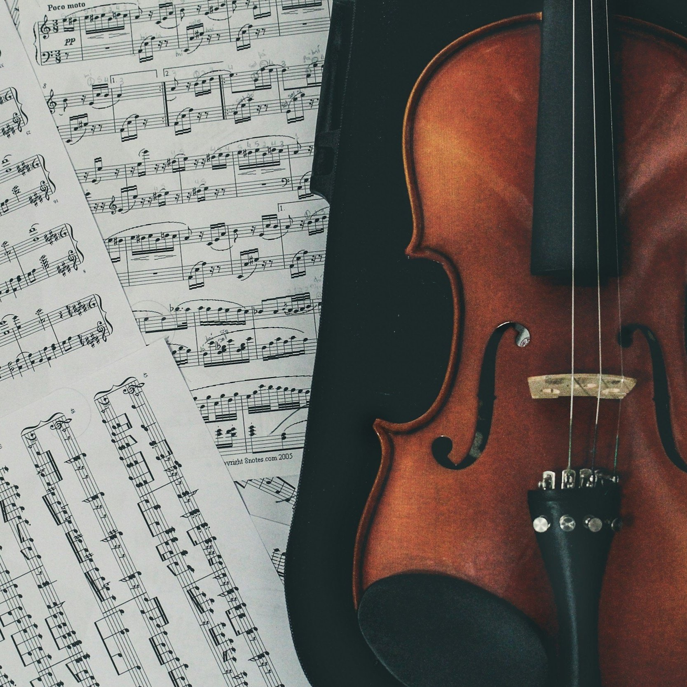

Piano Standard
Percorsi monotematici in base al tuo gusto musicale preferito. Puoi trovare festival musicali monotematici abbinati tra loro in un percorso tutto da scoprire e che vi farà appassionare ancora di più!
Maggiori informazioni
Piano Discovery
Perché fermarsi ad un solo genere musicale? Questo percorso metterà insieme festival variegati per dare l'opportunità di ascoltare cosa più vi piace e chissà, magari scoprire nuovi generi!
Maggiori informazioni

Crea il tuo piano
Qui potrai trovare un elenco di festival in programma tra cui scegliere e creare il tuo itinerario personalizzato!
Maggiori informazioni